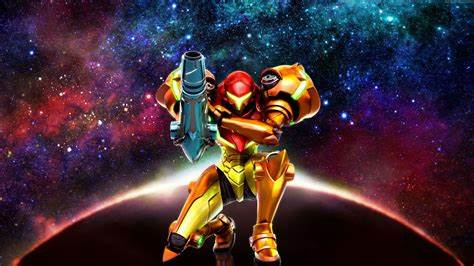
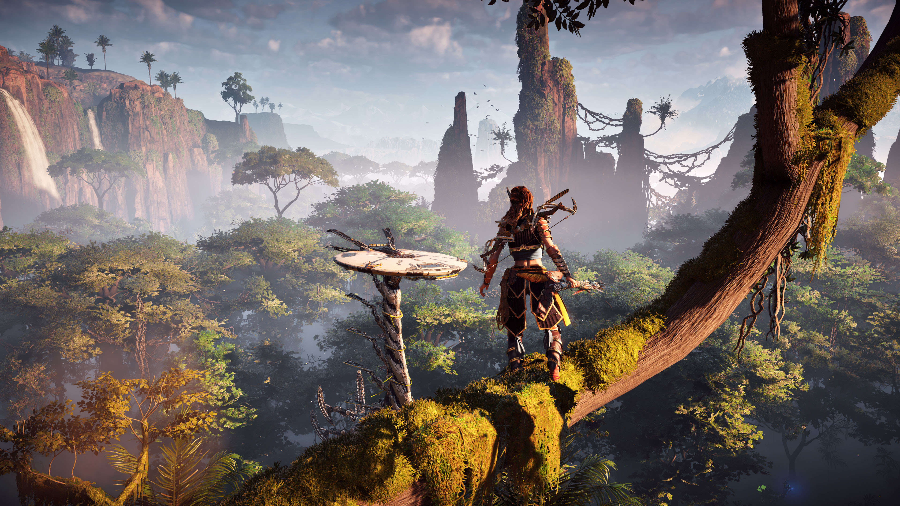
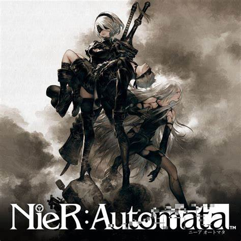

Mi 5 juegos favoritos
Los videojuegos son un software donde los programadores pueden desarrollar sus ideas y los jugadores puedan interacturar con el, en mi opinion tambien son medio de arte, expresion,
ya que permite hacer volar tu imaginacion e ingenio para crear cosas nunca antes vistas, desde muy pequeño es o si no, el hobby que mas me gusta hacer o practicar, cada videojuego es
facinante y diferente de otro, cada uno cuenta una historia diferente e incluso de juegan de diferente manera, es una industria que esta en constante evolucion al igual que crece en
cuanto a dinero que se invierte en esta industria convirtiendose en un mercado muy importante, dado esta breve introduccion me gustaria hablar los que para mi son mis 5 juegos favoritos
sin orden de cual es mejor, simplemente los 5 que mas me gustan
No.5: Metroid
Metroid es una saga que ya tiene mucho tiempo en el mercado desde la primera consola de la compañia Nintendo, es un juego a variado con el tiempo en estetica y manera de jugar, desde 2D
hasta juegos en primera persona, teniendo tantos juegos detras de esta saga yo diria que mi favorito es Metroid Prime ya que fue el primero que jugue de esta saga y le tengo mucho cariño,
Metroid Prime cambio un poco la formula dando un salto al 3D y siendo un juego en primera persona con un gran apartado grafico

No.4: God of war
God of War, es un saga que creo la compañia Sony en rama Playstation, en esta compañia es de sus franquicias mas antiguas y rentables de su historia en el mercado de los videojuegos, de los muchos juegos
que conforman esta saga, diria que mi favorito es God of War Ragnarok, porque lleva a nuestro protagonista durante una gran travesia y encontrando que no importa quieens fuimos en el pasado
siempre podemos cambiar y ser mejores de lo que fuimos

No.3: Horizon Zero Dawn
Horizon Zero Down es una franquicia insignia de Playstation la cual salio en la consola PS4 la cual destaco por su gran apartado grafico, es una gran historia de superacion de parte
de la protagonista la cual a pesar del trato que recibio donde vivia, no cambio su forma de ser y supero todos los obstaculos, a pesar de ser una franquicia insignia solo cuenta
con dos entregas de las cuales me quedo con la primera entrega, un grandioso juego

No.2: Nier Automata
Nier Automata es un grandioso juego el cual cuenta con una gran historia llena de emociones, que van desde la ira, amor, tragedia, en mi caso con lo que mas quede facinado aparte de
su historia llena de giros de trama o su apartado visual, seria su banda sonora, es increible la mayoria de las canciones que suenan son muy agradables para el oido y acompañan
muy bien la historia y los momentos en ella

No.1: Saga Zelda
Zelda es una saga insignia de la compañia Nintendo la cual cuenta con una gran cantidad de juegos a lo largo de su historia, en este caso mi favorito es Zelda Breath of the Wild la cual
es la historia que mas he disfrutado de la saga, me encanto la historia, su gran jugabilidad, los persoanjes tan entrañables asi como una banda sonora increible, cada parte de la historia
es algo increible, sin duda uno de los mejores juegos de la historia